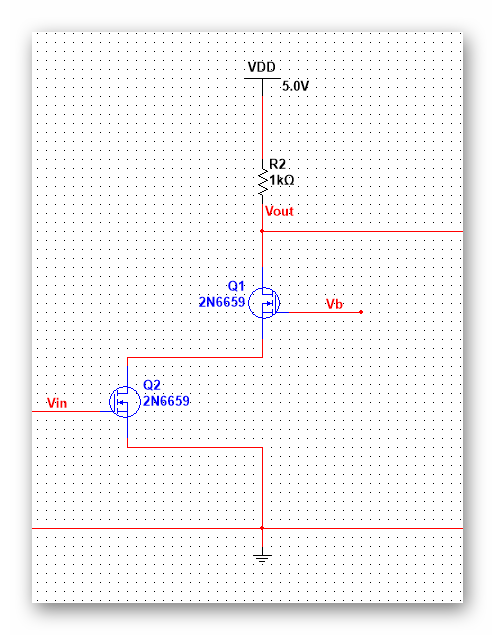

| 模拟集成电路 | |
目录： 一之MOS器件 二之单级放大器 三之差动放大器 四之电流镜偏置 五之共源电阻负载 六之共源二极管负载 七之共源电流源负载 八之共源电流反馈 九之线性区MOS负载 十之共源极负反馈负载 十一之源跟随器（共漏） 十二之共栅极 十三之共源共栅 十四之差动放大器 十五之电流镜 十六之偏置电路 十七之小技巧1 十八之小技巧2 返回页： 类似页：
|
九、casecode（共源共栅）这里还有casecade，不知道这两个有啥区别，好像casecade没有负载，casecode有负载。  这是一个简单的共源共栅电路（套筒式），这种电路的分析首先要有一个直观的认识。 前面我们已经知道共栅极可以输入电流信号，所以，可以将共源极电路的输出直接接在共栅极的输入得到casecode。 大信号特性就不详细的分析了，主要看小信号。 第一层是共源极放大，负载是共栅极输入电阻，电压增益由共源极提供，作用于Rd负载，M2对电压没有影响。（当然不考虑体效应和调制效应） 那加入共栅极的作用何在？ 看一下casecode的输出阻抗： Rout=[1+(gm2+gmb2)ro2]ro1+ro2,这个阻抗比ro1的输出阻抗大的多。大约为（gm2+gmb2）ro2倍。高的输出阻抗带来的是增益的增加。 当然，高的输出阻抗也可以作为电流源使用。 这里还有一种劣质的共源共栅结构，直接将偏置电压连在Vin中，这样在M1等于M2时是长度两倍的晶体管，在M1<M2时（共栅小于共源），就是一个 真正的casecode。 也可以使用casecode来做屏蔽输入器件。 也可以了解一下折叠式的共源共栅，这种将共源的输出电流作为共栅的输入信号的电路，这里不多加描述。 注意求解输出电阻的快捷方式就是确定放大端口M。具体的操作还是以干路电流关系为准。
|
|---|---|